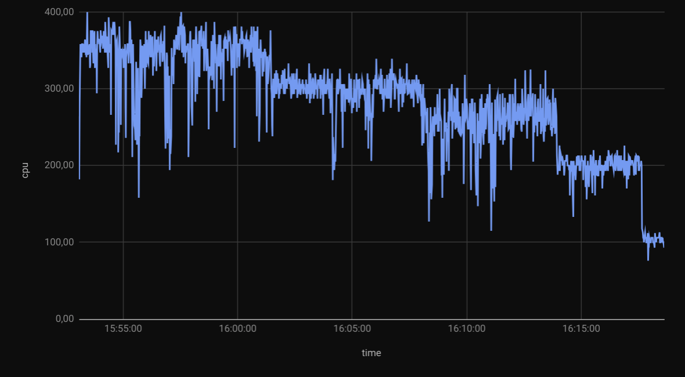

After playing around with a few Docker containers and Docker
compose, I decided it was time to dive into Kubernetes.
But I only have one server:
lexicon.
But only a little bit, maybe just enough to run a Minecraft
server, which refuses to start on my Raspberry Pi 4
because it has only a meagre 2 GB of RAM.
I had known about Intel NUC tiny PCs for a while, and
how handy they can be to have a dedicated physical PC for
experimentation. There was a very real possibility
that I would have to set one up as a light gaming PC in the
near future, so I thought cutting my teeth on a simpler
server setup would be a good way to get acquainted with this
hardware platform and its Linux support.
In fact, when I started building detailed process monitoring
I knew nothing about
telegraf,
influxdb,
grafana
or even Raspberry Pi computers.
It was back in 2017, when pondering whether to build my next
PC around an
Intel Core i7-6950X
or an
AMD Ryzen 5 1600X, that I started looking into measuring
CPU usage of a specific process. I wanted to better see and
understand whether more (but slower) CPU cores would be a
better investment than faster (but fewer) CPU cores.
At the time my PC had a
AMD Phenom II X4 965 BE C3
with 4 cores at 3.4GHz, and I had no idea how often those CPU
cores were all used to their full extent. To learn more about
the possibilities (and limitations) of fully
multi-threading CPU-bound applications, I started running
top commands in a loop and dumping lines in .csv files to
then plot charts in Google Sheets. This was very crude, but
it did show the difference between rendering a video in
Blender (not multi-threaded) compared to using the
pulverize tool to
fully multi-thread the same task:

This early ad-hoc effort resulted in a few scripts to
measure per-proccess CPU usage, overall CPU with thermals,
and even GPU usage.